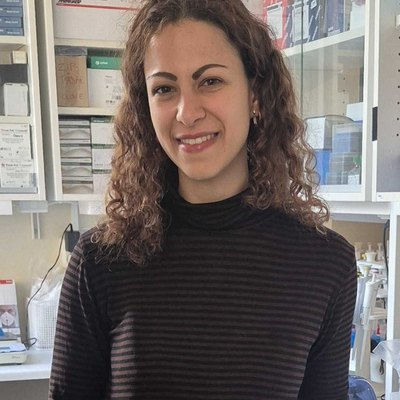

B-cell cancers
Leukemia and lymphoma cells do not survive alone. We examine how malignant B cells talk to the tissue around them, slip past immune surveillance, and lean on B-cell receptor signaling to grow, spread and withstand therapy.
B cells are built to protect us. We study what happens when one of them stops following the rules.
Our work follows B cells into two diseases where they turn against the body: blood cancer and autoimmunity.
Leukemia and lymphoma cells do not survive alone. We examine how malignant B cells talk to the tissue around them, slip past immune surveillance, and lean on B-cell receptor signaling to grow, spread and withstand therapy.
Healthy immune systems remove or silence B cells that recognize the body's own tissue. We ask how that tolerance is kept in place, and what fails when self-reactive B cells escape and drive diseases such as rheumatoid arthritis.
The goal is to understand how a protective cell becomes a driver of disease, and to turn that understanding into better treatments.
Department of Rheumatology and Inflammation Research, University of Gothenburg.
alessandro.camponeschi@rheuma.gu.se University profile
Department of Rheumatology and Inflammation Research, University of Gothenburg.
francesca.la.gualana@gu.se Google ScholarPeople who trained or worked in the lab.
We are grateful to the foundations and funding bodies whose support makes our research possible.